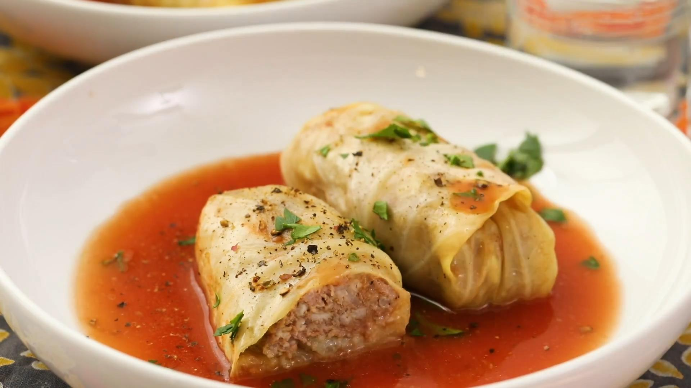

Stuffed cabbage

The first step is to make your filling. The filling is a combination of ground beef, cooked rice, onions, garlic, egg and seasonings. Everything gets mixed together to form the base of your dish. The meat mixture gets wrapped up inside cooked cabbage leaves, then the cabbage rolls are layered in a baking dish on top of homemade tomato sauce and baked. This dish takes over an hour to bake because to want to make sure your meat is cooked through, so plan accordingly!
- 2 tablespoons butter
- 1/2 cup onion finely chopped
- 1 teaspoon garlic minced
- 28 ounce can crushed tomatoes
- salt and pepper to taste
- 1 pound ground beef
- 1/4 cup fresh parsley leaves
- 1 head cabbage
- For the tomato sauce: Melt the butter in a large pot over medium heat. Add the onion and cook for 4-5 minutes or until translucent.
- Add the garlic and cook for 30 seconds. Add the crushed tomatoes, tomato sauce, salt and pepper to the pot.
- Stir in the brown sugar and red wine vinegar. Bring to a simmer.
- Cook for 10-15 minutes, stirring occasionally.
- While the sauce is simmering, assemble the cabbage rolls. Bring a large pot of water to a boil.
- Immerse the cabbage head in the boiling water. Cook for 3-5 minutes or until cabbage leaves are pliable. Peel 12 large leaves off the cabbage.
- Place the ground beef, rice, onion, garlic, salt, pepper, 2 tablespoons of parsley and egg in a bowl. Add 1/2 cup of the tomato sauce to the bowl. Stir to combine.
- Lay each cabbage leaf on a flat surface. Use a small knife to cut a V-shaped notch to remove the thick part of the cabbage rib.
- Shape 1/3 of a cup of the meat mixture into a log shape and place in the center of a cabbage leaf. Roll the cabbage leaf around the meat mixture. Repeat with remaining meat and cabbage leaves.
- Preheat the oven to 350 degrees F.
- Coat a 9"x13" pan with cooking spray. Place 1/2 of the tomato sauce in the bottom of the baking dish. Place the cabbage rolls, seam side down, in the dish. Top with remaining sauce.
- Cover with foil. Bake for 60-90 minutes or until cabbage is tender and meat is cooked through.
- Sprinkle with remaining 2 tablespoons of parsley, then serve.